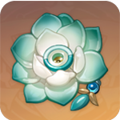
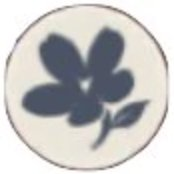
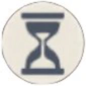

Recommended Artifacts
| Details | |
|---|---|
| Best |
Viridescent Venerer [4-Piece Set] |
| Substitute 1 |

Echoes Of An Offering [4-Piece Set] |
| Substitute 2 |
Shimenawa's Reminiscence [4-Piece Set] |
Recommended Artifact Stats
 |
Main: Flat ATK Sub: CRIT Rate / Crit DMG / ATK% / Elemental Mastery |
|---|---|
|  |
Main: Flat HP Sub: CRIT Rate / Crit DMG / ATK% / Elemental Mastery |
|  |
Main:ATK% Sub: CRIT Rate / Crit DMG / ATK / Elemental Mastery |
 |
Main: Anemo DMG Bonus Sub: CRIT Rate / Crit DMG / ATK% / Elemental Mastery |
 |
Main: CRIT Rate / CRIT DMG Sub: CRIT Rate / Crit DMG / ATK% / Elemental Mastery |
Crit Rate / Crit DMG For Consistent High Damage
Crir Rate and Crit DMG will ensure that whenever Heizhou's attacks hit, they will hit hard. Elemental Mastery is also good to have, but it should not be a priority for this build.